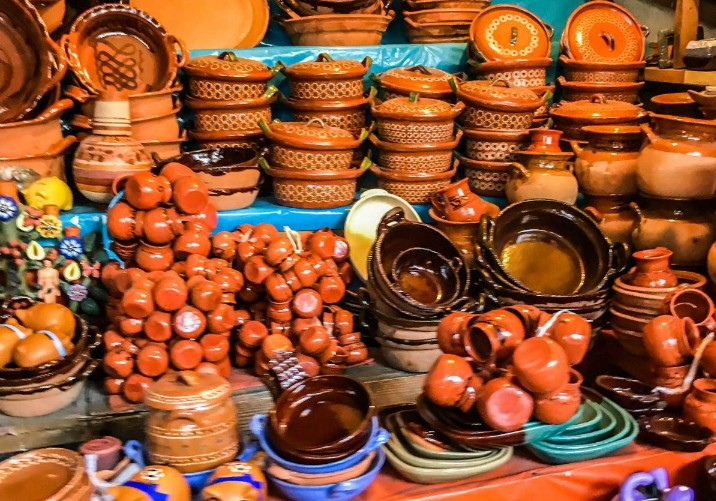
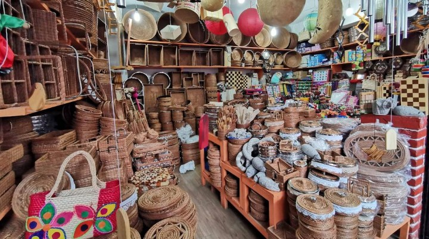

El mercado representa una parte importante de la identidad cultural de Valle de Bravo, porque permite conservar y mostrar técnicas artesanales que se han transmitido de generación en generación. Las artesanías no solamente sirven como adornos o utensilios, también representan la creatividad, los conocimientos y las costumbres de las comunidades..

El Mercado de Artesanías de Valle de Bravo es mucho más que un lugar donde se venden objetos. Es un espacio que representa la cultura, la creatividad, la historia y el esfuerzo de los artesanos mexicanos. A través de sus productos podemos conocer las tradiciones de la región y comprender la importancia de conservar los conocimientos que han pasado de generación en generación. También es una fuente de empleo y una atracción turística que contribuye al desarrollo económico del municipio.
